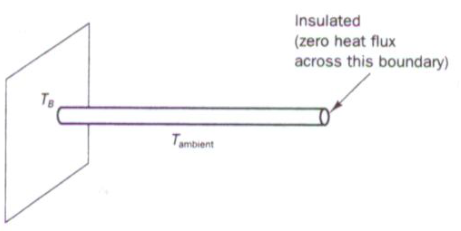

Interpolação
Interpolação polinomial
Suponha que queremos conhecer a população às vezes entre os anos do censo ou estimar populações futuras. Uma técnica é encontrar um polinômio que passa por todos os pontos de dados.
Dado $n$ pontos $(t_1, y_1), \ldots, (t_n, y_n)$, onde os $t_i$ são todos distintos, o problema de interpolação polinomial é encontrar um polinomial $P$ de grau menor que n tal que $p (t_i) = y_i$ para todos $i$.
O problema de interpolação polinomial tem uma solução única. Uma vez encontrado o polinômio interpolador, ele pode ser avaliado em qualquer lugar para estimar ou prever valores.
Interpolação como um sistema linear
Dados os dados $(t_i, y_i)$ por $i = 1, \ldots, n$, buscamos um polinômio
\[ p(t) = c_1 + c_{2} t + c_3t^2 + \cdots + c_{n} t^{n-1}, \]
de tal modo que $y_i=p(t_i)$ para todos $i$. Essas condições são usadas para determinar os coeficientes $c_1\ldots,c_n$:
\[ c_1 + c_2 t_1 + \cdots + c_{n-1}t_1^{n-2} + c_nt_1^{n-1} = y_1, \\ c_1 + c_2 t_2 + \cdots + c_{n-1}t_2^{n-2} + c_nt_2^{n-1} = y_2, \\ c_1 + c_2 t_3 + \cdots + c_{n-1}t_3^{n-2} + c_nt_3^{n-1} = y_3, \\ \vdots \qquad \\ c_1 + c_2 t_n + \cdots + c_{n-1}t_n^{n-2} + c_nt_n^{n-1} = y_n.\]
Essas equações formam um sistema linear para os coeficientes $c_i:$
\[ \begin{bmatrix} 1 & t_1 & \cdots & t_1^{n-2} & t_1^{n-1} \\ 1 & t_2 & \cdots & t_2^{n-2} & t_2^{n-1} \\ 1 & t_3 & \cdots & t_3^{n-2} & t_3^{n-1} \\ \vdots & \vdots & & \vdots & \vdots \\ 1 & t_n & \cdots & t_n^{n-2} & t_n^{n-1} \\ \end{bmatrix} \begin{bmatrix} c_1 \\ c_2 \\ c_3 \\ \vdots \\ c_n \end{bmatrix} = \begin{bmatrix} y_1 \\ y_2 \\ y_3 \\ \vdots \\ y_n \end{bmatrix}, ``` ou simplesmente, $\mathbf{V} \mathbf{c} = \mathbf{y}$. A Matrix $\mathbf{V}$ é de um tipo especial chamado de Vandermonde. A interpolação polinomial pode, portanto, ser formulada como um sistema linear de equações com uma matriz de Vandermonde. Criamos dois vetores para dados sobre a população da China. O primeiro tem os anos dos dados do censo e o outro tem a população, em milhões de pessoas. \]
julia year = [1982,2000,2010,2015]; pop = [1008.18, 1262.64, 1337.82, 1374.62]; t = year .- 1980.0 y = pop; V = [ t[i]^j for i=1:4, j=0:3 ] #4×4 Matrix{Float64}: #1.0 2.0 4.0 8.0 #1.0 20.0 400.0 8000.0 #1.0 30.0 900.0 27000.0 #1.0 35.0 1225.0 42875.0 c = V \ y #4-element Vector{Float64}:
962.2387878787877
24.12775468975476
#-0.592262049062053 #0.006843867243867301
using Polynomials p = Polynomial(c) p(2005-1980)
O valor oficial da população para 2005 foi 1303,72, então nosso resultado é bastante bom.
julia using Plots scatter(t,y, label="real", legend=:topleft, xlabel="anos desde 1980", ylabel="população (milhões)", title="População da China")
interpole em 500 pontos no intervalo [0,35].
tt = range(0,35,length=500)
avalie o polinômio nesses pontos
yy = p.(tt) plot!(tt,yy,label="interpolante")
## Exercícios
1. Suponha que você queira interpolar os pontos (-1,0), (0,1), (2,0), (3,1) e (4,2) por um polinômio de grau o mais baixo possível.
**(a)** ✍ Qual é o grau máximo necessário desse polinômio?
**(b)** ✍ Escreva um sistema linear de equações para os coeficientes do polinômio interpolador.
**(c)** ⌨ Use Julia para resolver numericamente o sistema em (b).
2. **(a)** ✍ Suponha que você quer encontrar um polinômio cúbico $p$ tal que $p(-1) = -2$, $p'(-1) = 1$, $p(1) = 0$, e $p'(1) = -1$. (Isso é conhecido como um *Interpolador de Hermite.*) Escreva um sistema linear de equações para os coeficientes de $p$.
**(b)** ⌨ Use Julia para resolver o sistema linear na parte (a), e faça um gráfico de $p$ sobre $-1 \le x \le 1$.
# Continuando com interpolação
Dado $n+1$ pontos distintos $(t_0,y_0)$, $(t_1,y_1),\ldots,(t_n,y_n)$, com $t_0<t_1<\ldots <t_n$ chamados de nós, o problema de interpolação é encontrar uma função $p(x)$, chamada de interpolante, tal que $p(t_k)=y_k$ para $k=0,\dots,n$.
Aqui $t_k$ são os nós e $x$ denota a variável independente contínua.
Os nós de interpolação são numerados de 0 a $n$. Isso é conveniente para nossas declarações matemáticas, mas menos em um idioma como Julia, no qual os índices vetoriais começam com 1. Os índices em um código de computador têm o mesmo significado que os nomeados idênticos nas fórmulas matemáticas e portanto, deve ser incrementado por um sempre que usado em um contexto de indexação.
Os polinômios são o primeiro candidato óbvio a servir como funções interpolando. Eles são fáceis de trabalhar e, em vimos que um sistema linear de equações pode ser usado para determinar os coeficientes de um polinômio que passa por todos os membros de um conjunto de pontos. No entanto, não é difícil encontrar exemplos para os quais a interpolação polinomial leva a resultados inutilizáveis.
Aqui estão alguns pontos que poderíamos considerar ser observações de uma função desconhecida em [-1,1].
julia n = 5 t = range(-1,1,length=n+1) y = @. t^2 + t + 0.05sin(20t)
scatter(t,y,label="dados",leg=:top)
O interpolante polinomial, calculado usando o `fit`, parece muito bom.
julia p = Polynomials.fit(t,y,n) plot!(p,-1,1,label="interpolant")
Mas agora considere um conjunto diferente de pontos gerados quase exatamente da mesma maneira.
julia n = 18 t = range(-1,1,length=n+1) y = @. t^2 + t + 0.05sin(20t)
scatter(t,y,label="data",leg=:top)
Os pontos em si não tem nada de especial. Mas dê uma olhada no que acontece com a interpolante polinomial.
julia p = Polynomials.fit(t,y,n) x = range(-1,1,length=1000) plot!(x,p.(x),label="interpolant")
Certamente deve haver funções que são mais representativas desses pontos!
## Interpolação por polinômios por partes
Para manter pequenos graus de polinomial enquanto interpolam grandes conjuntos de dados, escolheremos interpolantes dos polinômios por partes. Especificamente, o interpolante p deve ser um polinômio em cada subintervalo $[t_ {k-1}, t_k]$ para $k = 1, \ldots, n.$
Geralmente, designamos antecipadamente um grau máximo para cada parte polinomial de p (x).
julia scatter(t,y,label="data",leg=:top) using Dierckx p1 = Spline1D(t,y;k=1)#grau 1 p2 = Spline1D(t,y;k=2)#grau 2 p3 = Spline1D(t,y;k=3)#grau 3 plot!(x->p1(x),-1,1,label="piecewise linear") plot!(x->p2(x),-1,1,label="piecewise quadrático") plot!(x->p3(x),-1,1,label="piecewise cúbico")
## Exercício
1. Os dois vetores a seguir definem uma forma geometrica.
julia x = [ 0,0.51,0.96,1.06,1.29,1.55,1.73,2.13,2.61, 2.19,1.76,1.56,1.25,1.04,0.58,0 ] y = [ 0,0.16,0.16,0.43,0.62,0.48,0.19,0.18,0, -0.12,-0.12,-0.29,-0.30,-0.15,-0.16,0 ]
Podemos considerar x e y como funções de um parâmetro s, com os pontos sendo valores dados em $s = 0,1, \ldots, 15$.
(a) Interpole os pontos usando spline1d e plote a imagem.
(b) Uma desvantagem do resultado na parte (a) é o canto perceptível no lado esquerdo, que corresponde a s = 0 de cima e s = 15 de baixo. Teste adicionar a palavra-chave `periodic = true` à chamada de spline1d e plote o resultado.
## **Estabilidade da interpolação polinomial**
Escolhemos uma função em relação ao intervalo $[0,1]$ .
julia f = x -> sin(exp(2*x)); plot(f,0,1,label="função",legend=:bottomleft) t = (0:6)/6 y = f.(t) scatter!(t,y,label="nós") p = Polynomials.fit(t,y) plot!(p,0,1,label="interpolante",title="Interpolante equidistante, n=6")
Isso parece bom. Queremos rastrear o comportamento do erro à medida que $N$ aumenta. Estimaremos o erro no interpolante contínuo, amostrando-o em um grande número de pontos e tomando a norma máxima.
julia using LinearAlgebra n = 5:5:60; err = zeros(size(n)) x = range(0,1,length=2001) # pontos para medir o erro for (i,n) in enumerate(n) t = (0:n)/n y = f.(t) p = Polynomials.fit(t,y) err[i] = norm( (@. f(x)-p(x)), Inf ) end plot(n,err,m=:o,title="Erro de interpolação para nós equidistantes", xaxis=("n"),yaxis=(:log10,"max error"),)
O erro diminui inicialmente como seria de esperar, mas começa a crescer. Ambas as fases ocorrem a taxas exponenciais em $n$, ou seja, $O (k^n)$, aparecendo linear em um gráfico semi-log.
## Fenômeno de Runge
A decepcionante perda de convergência é um sinal de mau condicionamento devido ao uso de nós igualmente espaçados.
julia using Plots,LaTeXStrings,LinearAlgebra
f = x -> 1/(x^2 + 16) plot(f,-1,1,title="Função teste",legend=:none)
Essa função possui infinitamente muitos derivadas contínuas em toda a linha real e parece fácil de aproximar em $[-1,1]$. Começamos fazendo interpolação polinomial equispacada para alguns pequenos valores de $n$.
julia plot(xaxis=(L"x"),yaxis=(:log10,L"|f(x)-p(x)|",[1e-20,1]))
x = range(-1,1,length=2501) n = 4:4:12
for (k,n) in enumerate(n) t = range(-1,1,length=n+1) y = f.(t) p = Polynomials.fit(t,y) err = @. abs(f(x)-p(x)) plot!(x,err,m=(1,:o,stroke(0)),label="grau n") end title!("Erro para graus baixos")
A convergência até agora parece bastante boa, embora não seja uniformemente. No entanto, observe o que acontece à medida que continuamos aumentando o grau.
julia n = @. 12 + 15*(1:3) plot(xaxis=(L"x"),yaxis=(:log10,L"|f(x)-p(x)|",[1e-20,1]))
for (k,n) in enumerate(n) t = range(-1,1,length=n+1) y = f.(t) p = Polynomials.fit(t,y) err = @. abs(f(x)-p(x)) plot!(x,err,m=(1,:o,stroke(0)),label="grau n") end title!("Erro para graus altos")
A convergência no meio não pode ficar melhor do que a precisão da máquina em relação aos valores da função. Portanto, a manutenção da lacuna crescente entre o centro e as extremidades empurra as curvas de erro exponencialmente rapidamente nas extremidades, destruindo a convergência.
A observação da instabilidade é conhecida como o fenômeno runge. O fenômeno de Runge é uma instabilidade manifestada quando os nós do interpolante são igualmente espaçados e o grau do polinomial aumenta.
Significativamente, a convergência observada é estável dentro de uma parte do intervalo. Ao redistribuir os nós de interpolação, sacrificaremos um pouco da convergência na parte do meio, a fim de melhorá-lo perto das extremidades e resgatar o processo globalmente.
Uma família de nós que fornece convergência estável para a interpolação polinomial é os pontos Chebyshev do segundo tipo definido por:
math t_k = - \cos\left(\frac{k \pi}{n}\right), \qquad k=0,\ldots,n.
julia plot(label="",xaxis=(L"x"),yaxis=(:log10,L"|f(x)-p(x)|",[1e-20,1])) x = range(-1,1,length=2001) for (k,n) in enumerate([4,10,16,40]) t = [ -cos(pi*k/n) for k in 0:n ] y = f.(t) p = Polynomials.fit(t,y) err = @.abs(f(x)-p(x)) plot!(x,err,m=(1,:o,stroke(0)),label="degree n") end title!("Erro com os pontos de Chebyshev")
A partir do grau 16, o erro está dentro da precisão de máquina e ele permanece lá à medida que $n$ aumenta.
### Exercício
1. Para cada caso, calcule o interpolante polinomial usando $n$ nós de Chebyshev do segundo tipo em $[-1,1]$ por $n = 4,8,12, \ldots, 60$ . Em cada valor de $n$, calcule o erro (ou seja, $\max | p (x) -f (x) |$ avaliado em 4000 valores de $x$. Usando uma escala log-linear, plote o erro em função de $n$ e, em seguida, determine uma boa aproximação à constante $k$ de $O(n^{-k})$.
(a) $f (x) = 1/(25x^2+1)$
(b) $f (x) = \tanh (5 x+2)$
(c) $f (x) = \cosh(\sin x)$
(d) $f (x) = \sin (\cosh x)$
## Integração numérica
A primitiva de $e^x$ é simples, isso torna a avaliação de $\int_{-1}^1 e^xdx$ pelo teorema fundamental trivial.
julia using FastGaussQuadrature, LinearAlgebra exato = exp(1)-exp(-1)
x, w = gausslegendre(3) #([-0.7745966692414834, 0.0, 0.7745966692414834], [0.5555555555555556, 0.8888888888888888, 0.5555555555555556])
f(x) = exp(x)
In = dot(w, f.(x)) exato-In
A abordagem numérica é muito robusta. Por exemplo, $e^{\sin x}$ não tem primitiva conhecida. Mas numericamente, sua integral não é mais difícil de ser calculada.
julia f(x) = exp(sin(x)) In = dot(w, f.(x))
Quando você olha para os gráficos dessas funções, o que é notável é que uma dessas áreas é muito simples, enquanto o outro é analiticamente muito difícil. Do ponto de vista numérico, eles são praticamente o mesmo problema.
julia using Plots,LaTeXStrings plot([exp,x->exp(sin(x))],-1,1,fill=0,layout=(2,1), xlabel=L"x",ylabel=[L"e^x" L"e^{\sin(x)}"],ylim=[0,2.7])
A integração numérica, que também passa pelo nome mais antigo quadratura, é executado pela combinação de valores do integrando amostrados nos nós. Nesta seção, assumiremos nós igualmente espaçados:
math t_i = a +i h, \quad h=\frac{b-a}{n}, \qquad i=0,\ldots,n.
A Integração numérica consiste em uma lista de pesos $w_0, \ldots, w_N$ escolhidos de modo que:
math \inta^b f(x)\, dx \approx h \sum{i=0}^n wif(ti) = h \bigl[ w0f(t0)+w1f(t1)+\cdots wnf(tn) \bigr].
Uma maneira direta de derivar fórmulas de integração é encontrar um interpolante e operar exatamente nele.
### Regra do trapézio
Uma das fórmulas de integração mais importantes resulta da integração do interpolante linear por partes. Geometricamente, a fórmula trapezoidal de áreas de trapezoides que se aproximam da região sob a curva y = f (x)

Usando áreas de triângulos, é trivial derivar que
math w_i = \begin{cases}1, & i=1,\ldots,n-1,\\frac{1}{2}, & i=0,n.\end{cases}
julia """ trapezoidal(f,a,b,n)
Aplique a fórmula de integração do trapezoidal no intervalo [a,b], quebrado em ppartes iguais.Retorna a estimativa, um vetor de nós e um vetor de valores do integrando nos nós. """
function trapezoidal(f,a,b,n) h = (b-a)/n t = range(a,b,length=n+1) y = f.(t) T = h * ( sum(y[2:n]) + 0.5*(y[1] + y[n+1]) ) return T,t,y end
Vamos aproximar $f(x)=e^{\sin 7x}$ no intervalo $[0,2]$.
julia using PrettyTables f = x -> exp(sin(7*x)); a = 0; b = 2;
Integral = 2.6632197827615394 #exato T,t,y = trapezoidal(f,a,b,40) @show (T,Integral-T);
n = [ 10^n for n in 1:5 ] err = [] for n in n T,t,y = trapezoidal(f,a,b,n) push!(err,Integral-T) end
pretty_table([n err],["n","erro"])
Cada aumento em um fator de 10 em $n$ reduz o erro em um fator de cerca de 100, o que é consistente com a convergência de segunda ordem.
### Quadratura de Gauss
Vamos considerar a fórmula de integração numérica genérica:
math \int{-1}^1f(x) dx\approx\sum{k=1}^nwkf(tk)=Q_n[f],
Como existem $n$ nós e $n$ pesos disponíveis para escolher, parece plausível esperar que a quadratura consiga representar exatamente os polinômios de grau $m = 2n-1$ , e essa intuição acaba sendo correta.
Vamos testar isso na integral:
math \int_{-1}^1\frac1{1+4x^2}dx=\arctan(2).
julia f = x->1/(1+4*x^2); exato = atan(2);
n = 8:4:96 errT = zeros(size(n)) errG = zeros(size(n)) for (k,n) in enumerate(n) errT[k] = abs(exato - trapezoidal(f,-1,1,n)[1]) x, w = gausslegendre(n) errG[k] = abs(exato - dot(w, f.(x))) end
errT[iszero.(errT)] .= NaN errG[iszero.(errG)] .= NaN plot(n,[errT errG],m=:o,label=["T" "GL"], xaxis=("nós"), yaxis=(:log10,"error",[1e-16,1]), title="integração numérica")
E agora com uma integral com um integrando mais pontudo:
$\int_{-1}^1 \frac{1}{1+16x^2} \, dx = \frac{1}{2}\arctan(4).$
julia f = x->1/(1+16*x^2); exato = atan(4)/2;
n = 8:4:96 errT = zeros(size(n)) errG = zeros(size(n)) for (k,n) in enumerate(n) errT[k] = abs(exato - trapezoidal(f,-1,1,n)[1]) x, w = gausslegendre(n) errG[k] = abs(exato - dot(w, f.(x))) end
errT[iszero.(errT)] .= NaN errG[iszero.(errG)] .= NaN plot(n,[errT errG],m=:o,label=["T" "GL"], xaxis=("nós"), yaxis=(:log10,"error",[1e-16,1]), title="integração numérica")
### Exercícios
1. Usando a mudança de variável: $z = \phi(x) = a + (b-a)\frac{(x+1)}{2}$ a integral pode ser reescrita como: $\int_{a}^b f(z) \, d z= \frac{b-a}{2} \int_{-1}^{1} f( \phi(x) ) \, d x .$ Sabendo disso, use a quadratura de Gauss para integrar $\int_{\pi/2}^{\pi} x^2 \sin 8x \, d x = -\frac{3 \pi^2}{32}.$ Mostre resultados para diferentes valores de $n$ até que se obtenha uma convergência de 10 digitos.
2. Integre numericamente a função $f(x) = -x\log(|x-1/2|)$ no intervalo $[0,1/2]$ usando a quadratura de Gauss. Use 5, 10, 15 e 20 pontos de Gauss.
```math
I_a=\int_{0}^{1/2}-x\log(|x-\frac{1}{2}|) dx=\frac{1}{16}\left(3+2\log 2\right)=0,274143
```
## Integrais singulares ou quasi-singulares
A última função integrada tem uma singularidade quando $x=1/2$. Mesmo com essa singularidade, e tendendo a infinito nesse ponto, essa função pode ser integrada analiticamente. Numericamente é interessante usar técnicas especiais para tratar de integrais desses tipo.
Considere uma integral do tipo:
math Is=\int{-1}^{1}\frac{g(\xi)}{(\xi-a)^{2}+b^{2}} \mathrm{d}\xi
Uma ideia para avaliar numericamente integrais singulares($b=0$) ou quasi-singulares($b\neq 0$) é encontrar uma transformação cujo Jacobiano seja zero ou bem próximo de zero no ponto singular. Por exemplo, para integrais quasi-singulares podemos usar:
math \xi=a+b\sinh(\mu s-\eta)
onde
math \mu=\frac12\left{\operatorname{arcsinh}\left(\frac{1+a}b\right)+\operatorname{arcsinh}\left(\frac{1-a}b\right)\right}\\eta=\frac12\left{\operatorname{arcsinh}\left(\frac{1+a}b\right)-\operatorname{arcsinh}\left(\frac{1-a}b\right)\right}
e seu jacobiano é dado por:
math \frac{\mathrm{d}\xi}{\mathrm{d}s}=b\mu\cosh(\mu s-\eta)
Aplicando essa transformação, obtém-se:
math Is=\int{-1}^{1}\frac{g(s(\xi))}{(s(\xi)-a)^{2}+b^{2}} \frac{\mathrm{d}\xi}{\mathrm{d}s}\mathrm{d}s
essa transformação suaviza o integrando e acelera a convergência da quadratura.
julia
function sinhtrans(u, a, b) μ = 1 / 2 * (asinh((1 + a) / b) + asinh((1 - a) / b)) η = 1 / 2 * (asinh((1 + a) / b) - asinh((1 - a) / b))
x = a .+ b * sinh.(μ * u .- η)
J = b * μ * cosh.(μ * u .- η)
x, Jend
julia x=range(-1,1,length=100) xt,jac=sinhtrans(x, 0.5, 0.01) plot(xt,[x,jac],layout=(2,1),xlabel=L"s",ylabel=[L"\xi" L"\frac{d\xi}{ds}"],legend=false)
aplicando essa técnica para a integral do último exemplo pode-se observar uma redução significativa do erro para a mesma quantidade de pontos.
julia f = x->1/(1+16*x^2); exato = atan(4)/2;
n = 8
x, w = gausslegendre(n) xt,J= sinhtrans(x, 0, 1/4) errG = abs(exato - dot(w, f.(x))) errGt = abs(exato - dot(w, J.*f.(xt)))
### Exercício
1. Integre, outra vez , numericamente a função $f(x) = -x\log(|x-1/2|)$ no intervalo $[0,1/2]$ usando a quadratura de Gauss mas agora usando a transformada de Monegato com graus 3, 4 e 5. Use 5, 10, 15 e 20 pontos de Gauss e compare com os resultados.
julia """ transformada de Monegato de grau q singularidade em s0 """ function Monegato(t, s0, q=5.0) δ = 2^(-q) * ((1 + s0)^(1 / q) + (1 - s0)^(1 / q))^q t0 = ((1 + s0)^(1 / q) - (1 - s0)^(1 / q)) / ((1 + s0)^(1 / q) + (1 - s0)^(1 / q)) s = s0 .+ δ * (t .- t0) .^ q ds = q * δ * (t .- t0) .^ (q - 1) s, ds end
1. Use 10 pontos de Gauss para calcular as integrais abaixo. Compare com a solução analítica. Quais integrais tiveram os maiores erros? Por que?
math \begin{array}{|c|c|}\hline\int{-2}^{+3}\left(x^6-2x^5+7\right)\mathrm{d}x&144.04761904761904\\hline\int{0}^{+3}2\ln(x+1)\mathrm{d}x&5.090354888959125\\hline\int{0}^{+3}\ln(x)\mathrm{d}x&0.2958368660043291\\hline\int{0}^{\pi}\left(\sin(x)\right.\times\cos(2x)) \mathrm{d}x&-\frac{2}{3}=-0.66666666666667\\hline\int{0}^{\pi}\left(\sin(3x)\cdot\cos(2x)+2x^3+3x\sin(x)\right)\mathrm{d}x&59.3293234777059\\hline\int{0}^{1}\frac{1}{x+1}\mathrm{d}x&\ln(2)=0.6931471805599453\\hline\int_{0}^{1}\frac{1}{x+0.1}\mathrm{d}x&\ln(11)=2.3978952727983707\\hline\end{array} ```
Desafio
Considere o resfriamento de uma aleta circular por meio de transferência de calor por convecção ao longo de seu comprimento. A convecção dá origem a uma perda de calor ou termo de sumidouro dependente da temperatura na equação governante. Mostrada na Figura está uma aleta cilíndrica com área de seção transversal uniforme A. A base está a uma temperatura de 100C (TB) e a extremidade direita está isolada. A aleta está exposta a uma temperatura ambiente de 20C. A transferência de calor unidimensional nesta situação é governada por$\frac{\mathrm{d}}{\mathrm{d}x}\Bigg(kA\frac{\mathrm{d}T}{\mathrm{d}x}\Bigg)-hP(T-T_\infty)=0$
onde h é o coeficiente de transferência de calor por convecção, P o perímetro, k a condutividade térmica do material e T— a temperatura ambiente. Calcule usando BEM a distribuição de temperatura ao longo da aleta e compare os resultados com a solução analítica fornecida por $\frac{T-T_\infty}{T_B-T_\infty}=\frac{\cosh[n(L-x)]}{\cosh(nL)}$
